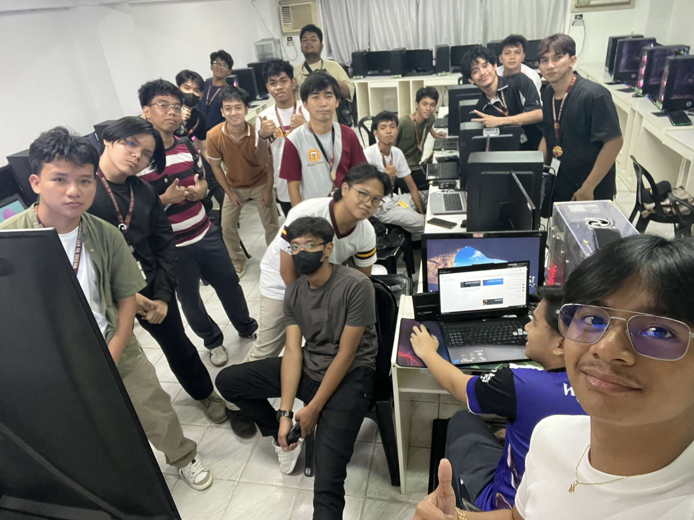

April 20

A beautiful day at Patar White Beach with family. The sand was white and the water was crystal clear!
April 26
Relaxing afternoon at Tondaligan Beach. Enjoyed the sunset with my special someone.
May 3

Weekend getaway at Masangret Beach. The peaceful atmosphere was perfect for relaxation.
May 6

Start of summer classes. Challenging but exciting to learn new things during summer!